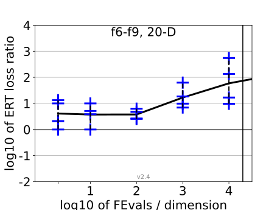
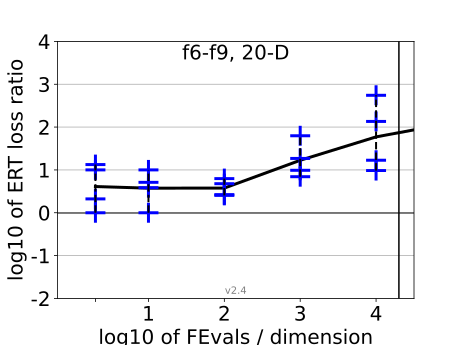

{kind=link}
{kind=link}
{kind=link}
{kind=link}
 
All functions in 5-D and 20-D
f1–f24 in 5-D, maxFE/D=5000
| #FEs/D | best | 10 % | 25 % | med | 75 % | 90 % |
|---|---|---|---|---|---|---|
| RLUS/D | 5e3 | 5e3 | 5e3 | 5e3 | 5e3 | 5e3 |
| 2 | 0.36 | 0.66 | 3.3 | 5.0 | 10 | 10 |
| 10 | 1.0 | 2.6 | 3.9 | 5.3 | 12 | 18 |
| 100 | 5.7 | 6.9 | 9.4 | 22 | 44 | 1.8e2 |
| 1e3 | 5.1 | 6.6 | 19 | 84 | 2.3e2 | 7.4e2 |
| 1e4 | 3.3 | 6.6 | 12 | 72 | 4.1e2 | 7.4e2 |
f1–f24 in 20-D, maxFE/D=20000
| #FEs/D | best | 10 % | 25 % | med | 75 % | 90 % |
|---|---|---|---|---|---|---|
| RLUS/D | 2e4 | 2e4 | 2e4 | 2e4 | 2e4 | 2e4 |
| 2 | 0.61 | 0.97 | 1.6 | 13 | 20 | 40 |
| 10 | 0.32 | 0.96 | 4.3 | 7.3 | 12 | 80 |
| 100 | 0.95 | 1.3 | 3.6 | 8.5 | 31 | 1.2e2 |
| 1e3 | 1.0 | 3.3 | 11 | 45 | 2.6e2 | 1.2e3 |
| 1e4 | 0.51 | 2.6 | 13 | 1.4e2 | 6.7e2 | 9.6e2 |
| 1e5 | 2.2 | 4.5 | 13 | 3.0e2 | 2.3e3 | 7.9e3 |
Separable functions in 5-D and 20-D
Misc. moderate functions in 5-D and 20-D
Ill-conditioned functions in 5-D and 20-D
Multi-modal functions in 5-D and 20-D
Weak structure functions in 5-D and 20-D
ERT loss ratios (see the previous figure for details). Each cross (+) represents a single function, the line is the geometric mean.{kind=link}
{kind=link}
{kind=link}
{kind=link}
{kind=link}
{kind=link}
{kind=link}